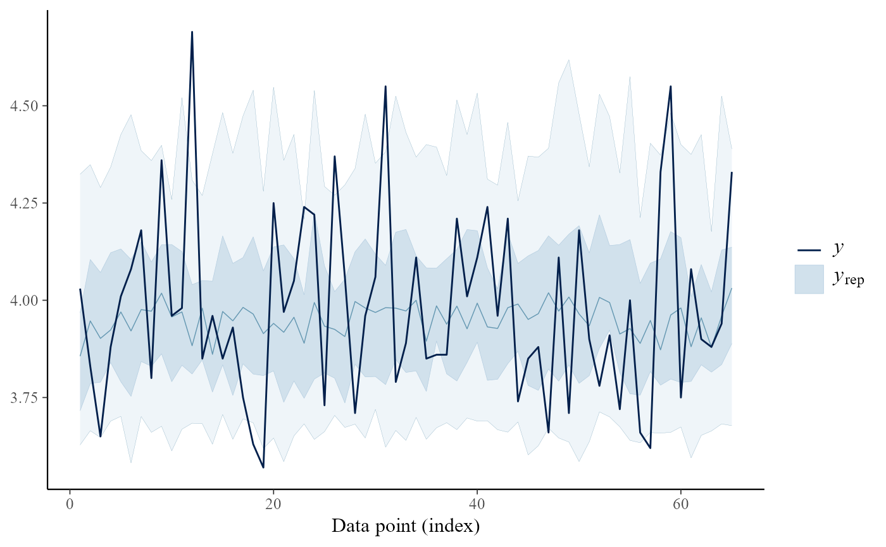
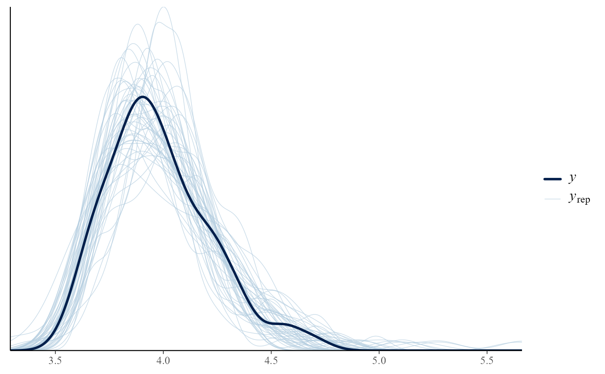
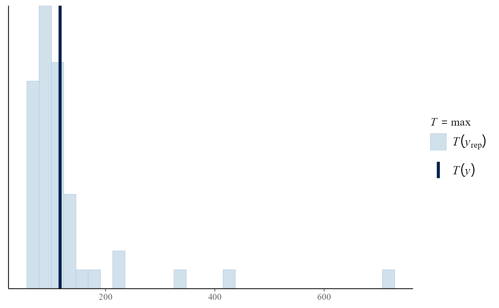

pp_check method for class "evpost". This provides an interface
to the functions that perform posterior predictive checks in the
bayesplot package. See PPC-overview for
details of these functions.
# S3 method for evpost pp_check( object, ..., type = c("stat", "overlaid", "multiple", "intervals", "user"), subtype = NULL, stat = "median", nrep = 8, fun = NULL )
Arguments
| object | An object of class "evpost", a result of a call to
|
|---|---|
| ... | Additional arguments passed on to bayesplot functions. |
| type | A character vector. The type of bayesplot plot required:
|
| subtype | A character scalar. Specifies the form of the plot(s)
produced. Could be one of
|
| stat | See PPC-test-statistics. |
| nrep | If |
| fun | The plotting function to call.
Only relevant if |
Value
A ggplot object that can be further customized using the ggplot2 package.
Details
For details of these functions see PPC-overview. See also the vignette Posterior Predictive Extreme Value Inference and the bayesplot vignette Graphical posterior predictive checks.
The general idea is to compare the observed data object$data
with a matrix object$data_rep in which each row is a
replication of the observed data simulated from the posterior predictive
distribution. For greater detail see Chapter 6 of Gelman et al. (2013).
The format of object$data depends on the model:
model = "gev". A vector of block maxima.model = "gp". Data that lie above the threshold, i.e. threshold exceedances.model = "bingp"or"pp"The input data are returned but any value lying below the threshold is set toobject$thresh.
In all cases any missing values have been removed from the data.
If model = "bingp" or "pp" the rate of threshold exceedance
is part of the inference. Therefore, the number of values in
object$data_rep that lie above the threshold varies between
predictive replications, with values below the threshold being
left-censored at the threshold. This limits a little the posterior
predictive checks that it is useful to perform. In the examples below
we have compared object$data and object$data_rep using
only their sample maxima.
References
Jonah Gabry (2016). bayesplot: Plotting for Bayesian Models. R package version 1.1.0. https://CRAN.R-project.org/package=bayesplot
Gelman, A., Carlin, J. B., Stern, H. S., Dunson, D. B., Vehtari, A., and Rubin, D. B. (2013). Bayesian Data Analysis. Chapman & Hall/CRC Press, London, third edition. (Chapter 6)
See also
rpost and rpost_rcpp for sampling
from an extreme value posterior distribution.
bayesplot functions PPC-overview, PPC-distributions, PPC-test-statistics, PPC-intervals, pp_check.
Examples
# \donttest{ # GEV model data(portpirie) mat <- diag(c(10000, 10000, 100)) pn <- set_prior(prior = "norm", model = "gev", mean = c(0,0,0), cov = mat) gevp <- rpost(1000, model = "gev", prior = pn, data = portpirie, nrep = 50) # Posterior predictive test statistics pp_check(gevp)#>pp_check(gevp, stat = "min")#>#> Error in get(as.character(FUN), mode = "function", envir = envir): object 'iqr' of mode 'function' was not found# Overlaid density and distributions functions pp_check(gevp, type = "overlaid")pp_check(gevp, type = "overlaid", subtype = "dens")# Multiple plots pp_check(gevp, type = "multiple")pp_check(gevp, type = "multiple", subtype = "hist")#>pp_check(gevp, type = "multiple", subtype = "boxplot")# Intervals pp_check(gevp, type = "intervals")pp_check(gevp, type = "intervals", subtype = "ribbon")# User-supplied bayesplot function # Equivalent to p_check(gevp, type = "overlaid") pp_check(gevp, type = "user", fun = "dens_overlay")# GP model data(gom) u <- quantile(gom, probs = 0.65) fp <- set_prior(prior = "flat", model = "gp", min_xi = -1) gpg <- rpost(n = 1000, model = "gp", prior = fp, thresh = u, data = gom, nrep = 50) pp_check(gpg)#>pp_check(gpg, type = "overlaid")# bin-GP model bp <- set_bin_prior(prior = "jeffreys") bgpg <- rpost(n = 1000, model = "bingp", prior = fp, thresh = u, data = gom, bin_prior = bp, nrep = 50) pp_check(bgpg, stat = "max")#># PP model data(rainfall) rthresh <- 40 pf <- set_prior(prior = "flat", model = "gev", min_xi = -1) ppr <- rpost(n = 1000, model = "pp", prior = pf, data = rainfall, thresh = rthresh, noy = 54, nrep = 50) pp_check(ppr, stat = "max")#># }